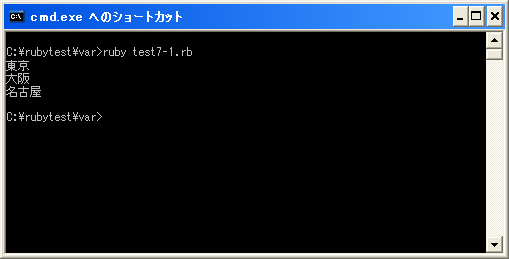

多重代入
複数の変数にオブジェクトを代入する場合、一つ一つオブジェクトを代入していく必要があります。
city1 = "東京" city2 = "大阪" city3 = "名古屋"
変数の数が多ければそれだけ変数への代入も必要となります。このような場合、複数の変数にまとめてオブジェクトを代入することが出来ます。次のように記述します。
変数1, 変数2, 変数3, ... = 式1, 式2, 式3, ...
代入演算子「=」の左辺に代入される変数をカンマで区切って並べて記述します。そして右辺には左辺に記述した変数に代入するオブジェクトや式などをカンマで区切って並べて記述します。この場合、右辺に記述された式を評価した値が左辺に記述された変数に順に代入されていきます。変数1には式1が、変数2には式2が、といった感じです。
また右辺は配列オブジェクトも指定できます。
変数1, 変数2, 変数3, ... = [要素1, 要素2, 要素3, ...]
この場合は右辺の配列オブジェクトの各要素が順に左辺に記述された変数に代入されていきます。(配列については「配列」を参照して下さい)。
最初に記述した例を多重代入を使って書き直すと次のようになります。
city1, city2, city3 = "東京", "大阪", "名古屋"
なお左辺に記述した変数の数より右辺に記述したオブジェクトの数が少ない場合、代入されるオブジェクトが無い変数には「nil」が代入されます。(「nil」とは擬似変数の一つで「偽」を表すオブジェクトで、オブジェクトが存在していないことを表すために使われるオブジェクトです)。
city1, city2, city3 = "東京", "大阪"
上記の場合、変数「city3」には代入されるオブジェクトが記述されていませんので「nil」が代入されます。
一見便利そうに見える多重代入ですが、関連性が薄い複数の変数にまとめて代入すると分かりにくくなります。変数への代入に多重代入はあまり見かけません。
なお多重代入は配列やメソッドの戻り値などでも使用されます。こちらは該当のページで詳しく確認します。
サンプルプログラム
では簡単なプログラムで確認して見ます。
#! ruby -Ku require "kconv" city1, city2, city3 = "東京", "大阪", "名古屋" print(Kconv.tosjis(city1 + "¥n")) print(Kconv.tosjis(city2 + "¥n")) print(Kconv.tosjis(city3 + "¥n"))
上記のプログラムを「test7-1.rb」として保存します。文字コードはUTF-8です。そして下記のように実行して下さい。

( Written by Tatsuo Ikura )

著者 / TATSUO IKURA
初心者～中級者の方を対象としたプログラミング方法や開発環境の構築の解説を行うサイトの運営を行っています。